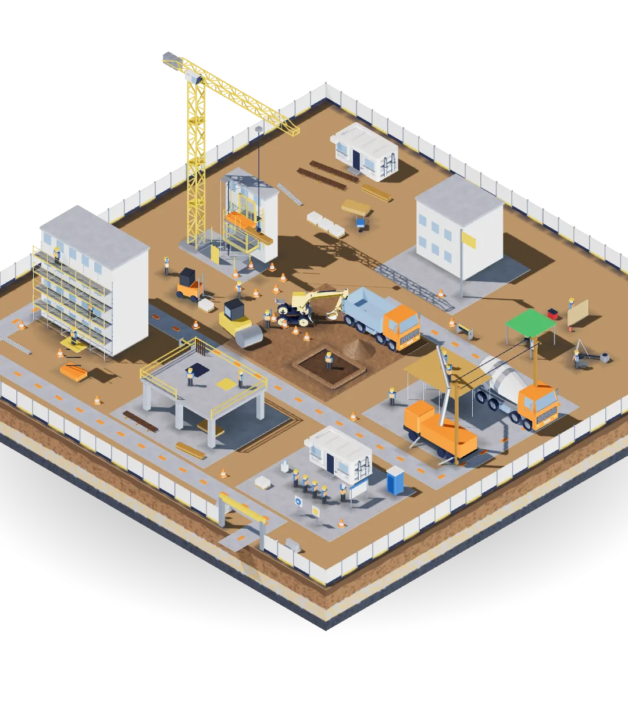
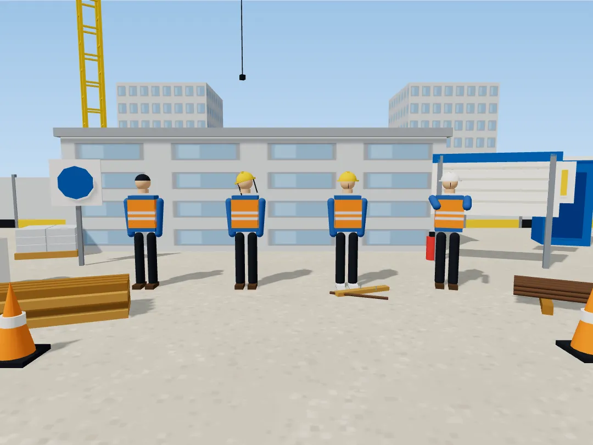

한 장 요약


참고한 특징 (이미지는 쓰지 않음)
| 특징 | 첫 삽에서 |
|---|---|
| 두께 있는 땅 블록, 떠 있는 디오라마 | 윗면 = 현장 바닥(흙·콘크리트·자갈 구역), 옆면 = 표토·흙·자갈·바위 층, 블록 밑 부드러운 그림자 |
| 소품이 촘촘한 장면 | 구역마다 진짜 현장 소품 6~15개(아래 목록). 빈 땅을 줄이고, 길가에 콘·바리케이드 |
| 부드러운 빛과 그림자 | 따뜻한 방향광 1(해) + 하늘빛 반구광, PCFSoft 그림자, 물체 밑 둥근 접지 그림자(구운 AO 대신), ACES 톤매핑 |
| 단순한 인형, 또렷한 보호구 | 노랑 안전모, 주황 조끼 + 흰 반사띠 2줄, 안전대는 굵은 노랑 끈 + 줄. 얼굴·글자·로고 없음 |
| 통일된 팔레트 | 모든 색은 css/tokens.css 토큰. v12.1 주황·남색(아스팔트)과 어울리는 따뜻한 흙색, 콘크리트 회색, 나무색 |
팔레트 (토큰)
--brand안전모·지금 구역
--vest조끼·동선 점선
--asphalt윤곽·이름표·바퀴
--art-ground현장 바닥
--art-dirt흙·굴착
--art-concrete슬래브·패드
--art-wood발판·각재·합판
--art-steel강관·동바리
--art-helmet장비·크레인·난간
--art-sky하늘·반구광
--safe안전·완료(초록 O)
--danger위험(빨강 X)
--mandatory꼭 할 것(파랑)
--caution주의·다시 볼 것
땅 블록 옆면 흙 단면
표토흙자갈바위
구역별 소품 목록 (js/learn/props3d.js)
| 구역 (동선 순서) | 소품 |
|---|---|
| 0 출근·TBM | 컨테이너 사무실, TBM 게시판, 줄 선 근로자 4명 + 반장, 보호구 표지(파랑 원)·주의 표지, 식수대, 간이 화장실, 팔레트, 콘, 정문 |
| 1 골조 바닥 | 기둥 + 슬래브(3.4m), 안전난간(앞쪽 일부 없음), 개구부·덮개, 기둥 철근, 합판·각재·철근 더미, 안전대 맨 근로자 |
| 2 비계 | 짓는 건물, 비계 4단(발판·난간 2줄·발끝막이판·가새), 고소작업대, 강관 더미, 콘 |
| 3 양중 | 타워크레인 + 매단 각재, 짐 아래 원형 통제(콘), 건설용 리프트, 지게차, 팔레트, 신호수 |
| 4 장비 | 판 구덩이 + 흙더미, 굴착기, 덤프, 롤러, 콘 줄, 신호수 |
| 5 타설 | 동바리 + 거푸집, 펌프카(붐 3단), 레미콘, 전봇대·전선 |
| 6 용접·밀폐 | 방화포 칸막이, 용접기, 불티, 소화기, 맨홀 + 삼각대 + 송풍기·덕트, 그늘막 + 물, 드럼 |
| 준공 · 야적장 | 다 지은 건물, 깃대 / 철근·각재·합판·강관·팔레트·컨테이너·수레·드럼 |
성능 규칙
- 같은 모양·색은 InstancedMesh 하나로 묶어서 그립니다. 지도 전체가 그리기 호출 수십 번 안에 들어갑니다.
- 위험 찾기 장면은 미리 렌더링한 WebP 이미지를 씁니다(장면 한 장 약 30KB). WebGL이 없으면 지도도 같은 각도로 미리 렌더링한 이미지(핀 위치 같음)를 씁니다.
- 3D 전체(엔진 + 모델 코드 + 이미지)는 8MB 이하로 유지합니다. 지금은 약 4MB입니다(이미지 2.3MB + 엔진·코드).